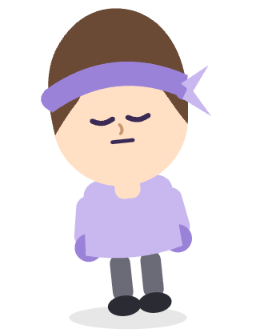

Pomodoro Critter


Mood: Sleepy
25:00
Sessions completed: 0
Session Length
25
Sessions of 15 minutes or longer count toward your critter's progress. Shorter ones still count down for you. They just won't move the mood needle.